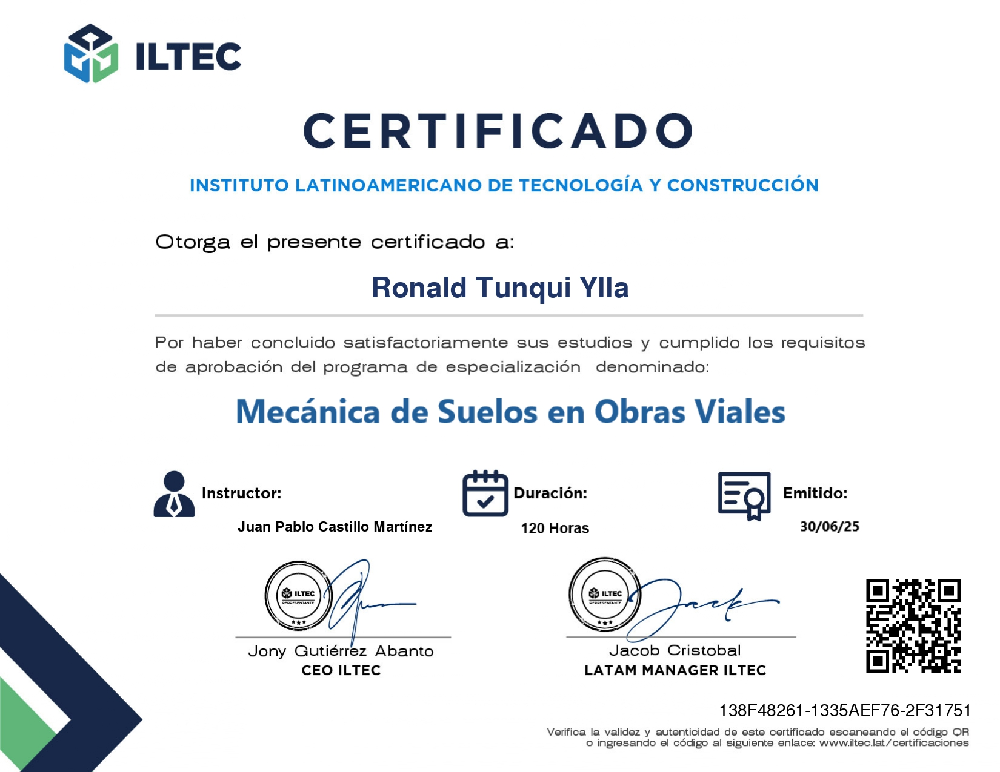

Consulta tu certificado del programa completado en esta sección o
solicita tu certificado a través de nuestros canales de contacto.
VERIFICADOR DE CERTIFICADOS
En esta sección podrás verificar los certificados emitidos por ILTEC para validar su autenticidad. Ingresa el ID del certificado y luego selecciona el botón de búsqueda.

Alumno: Ronald Tunqui Ylla
Curso: Mecánica de Suelos en Obras Viales
Duración: 120 horas
Emitido: 30/06/2025
Descargar certificado en PDF